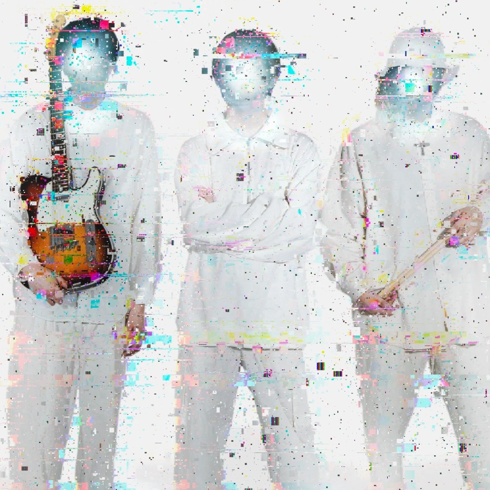
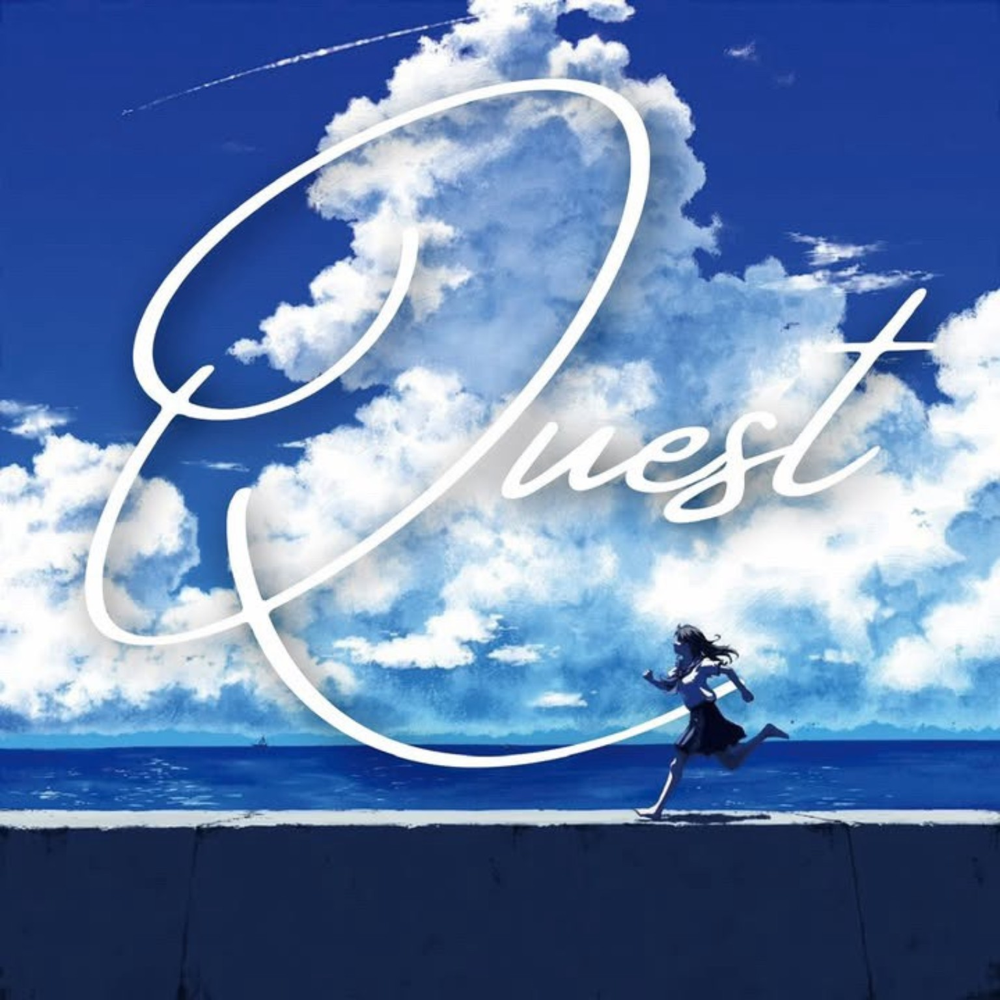

shiLo SOUND DEPARTMENT / ISSUE 046
WHITE なのに、 LOUD!
日常に、
おしゃぽっぷなBGMを。
白いのに、カラフル。
ポップなのに、ちょっとへん。そんなshiLoの音。


THE RECORD / 01Questこの曲をチェック ↗SIDE A — THE LISTENING ROOM
LISTEN.
お気に入りの音を、ここから。
shiLoの楽曲をサイト内で。
shiLo SOUND SYSTEMSTEREO / VOL. 01
IN THE MIXshiLo
HIT PLAYSPOTIFY OFFICIAL PLAYER
ここで、
音に出会う。
下のSpotifyプレイヤーの ▶ をタップして、shiLoの音楽を聴こう。
※ 再生にはSpotify側の制限が適用される場合があります。SPOTIFYで開く ↗
SIDE B — SELECT YOUR SOUND
MUSIC.
プレイリストに、
次の一曲を。
PICK UP!
TRACK SPOTLIGHT
Quest.
空の向こうへ、
鳴らしていこう。
青空を駆け抜けるようなジャケットと一緒に。shiLoの音楽を、もっと近くで。
SpotifyでshiLoを聴くSONG INDEX / shiLo
TRACKLIST.
曲名をタップすると、Eggsの楽曲ページへ直接移動します。
THE OUTSIDE WORLD / VISUAL NOTES 001ちょっと
はみ出す
音楽。もっと先まで、音を鳴らそう。 ↗
はみ出す
音楽。もっと先まで、音を鳴らそう。 ↗
03 / WHAT'S NEW
NEWS.
shiLoの最新情報。
EVENT TICKET / GET LOUD TOGETHER
LIVE.
SEE YOU AT THE SHOW! ✳
SEE YOU IN THE FRONT ROW. ♫
MERCHANDISE DEPARTMENT / 001
GOODS!
音を聴くだけじゃ、
ものたりない？
DROP 00 / NEW ARRIVAL?
COMING
SOON!
グッズの情報をここで紹介していくよ。
写真・種類・価格・販売方法は、決まり次第掲載予定。
shiLo / MERCHANDISECHECK BACK SOON ♫
THE BAND / BEHIND ALL THIS NOISE
ABOUT.
音楽がある日常は、
ちょっと面白い。
Tokyo pop rock band「shiLo（しろ）」。
真っ白なキャンバスに、
おしゃポップでロックな楽曲を描く。
TAP ME ♪
おしゃぽっぷなBGM ✳
NO MUSIC, NO COLOR. ↗
WE ARE shiLo.06 / THE BAND
MEMBER.
音をつくる、僕ら。
07 / KEEP THE MUSIC CLOSE
STAY
IN TUNE.
ライブのお知らせも、日々のことも。
shiLoをもっと知りたいなら。